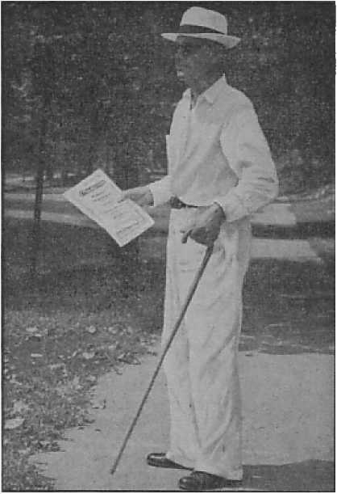

Trying to Work an Old Racket
The Best and Worst of Times
Prophecies now in course of fulfillment
Hitler’s Thousand*Year Plan
What it would mean for the world
Vatican Concept of Christianity
The War of Words
Five Cents a Copy Vol. XXIII No. 590 • >1.25 In Canada and Published Every
One Dollar a Year April 29, 1942 • Foreign Countries Other Wednesday
Contents
Acts of The Theocracy in New York State (2) 3
“By Their Fruits Ye Shall Know Them” 7
The New Government
The First to Recite the Pledge
“Thy Word Is Truth”
Under the Totalitarian Flag
Vatican Concept of Christianity
In the Days of Pope Innocent VIII
Presenting “This Gospel of the Kingdom” 26 Earth’s Most Perfect Nonsense
British Comment
It Pays to Follow Up Book Placements 30
Made Refugees in Almost No Time
The Hercules Came in All. 0. K.
Five French Boys Cross the Channel
Grandma Was Sore at the Kaiser
Published every other Wednesday by WATCHTOWER BIBLE AND TRACT SOCIETY, INC.
117. Adams St., Brooklyn, N. Y., U. S. A.
Editor Clayton J. Woodworth
Business Manager Nathan H. Knorr
Five Cents a Copy
$1 a year in the United States $1.25 to Canada and all other countries
NOTICE TO SUBSCRIBERS
Remittances: For your own safety, remit by postal or express money order. When coin or currency is lost in the ordinary mails, there is no redress. Remittances from countries other than those named below may be made to the Brooklyn office, but only by International postal money order.
Receipt of a new or renewal subscription will be acknowledged only when requested. Notice of Expiration is sent with the journal one month before subscription expires. Please renew promptly to avoid loss of copies. Send change of address direct to us rather than to th© post office. Your request should reach us at least two weeks before the date of issue with which it is to take effect. Send your old as well as the new address. Copies will not be forwarded by the post office to your new address unless extra postage is provided by you.
Published also in Afrikaans’, Bohemian, Danish, Dutch, Finnish, French, German, Greek, Hungarian, Japanese, Norwegian, Polish, Portuguese, Spanish, Swedish, Ukrainian; also special Australian edition in English.
OFFICES FOR OTHER COUNTRIES
England 34 Craven Terrace, London, W. 2
Canada 40 Irwin Avenue, Toronto 5, Ontario
Australia 7 Beresford Road, Strathfield, N.S.W. South Africa 623 Boston House, Cape Town
Entered as second-class matter at Brooklyn, N. Y.» under the Act of March 3, 1879.
Acts of the Mimic Theocracy
♦ Everyone is more or less acquainted with the religious dogmas of “purgatory”, masses (high and low), confession, absolution, etc. Any who are at all versed in the Holy Writ know their falsity, and it is not the purpose to here disprove them, as that has been thoroughly accomplished , by other Watchtower publications, and to the complete satisfaction of those of unbiased mind.
Of like common knowledge are their antics of trailing a little piece of bread about in idolatrous processions, bingoing all through the night, blessing everything and everybody—for a modest consideration, and, like dumb dogs, burying bones and bone fragments in the nooks and crannies of their church buildings throughout the earth. Like dogs, they sometimes forget just how many bones they have tucked away, and find themselves with enough of St. Theresa’s, for example, to construct a dozen skeletons. Jesus said they were as “whited sepulchres, which indeed appear beautiful outward, but are within full of dead men’s [and women’s] bones”.
Like Athens of old, New York is extremely religious. At hand is a picture of the blessing of motorcycles at Buffalo, with an increasing number of wrecks sure to follow. That’s the way it works.
Men 45 to 64 Must Register April 27 ♦ The Fourth Registration under the Selective Training and Service Act has been proclaimed by President Roosevelt and will be held on Monday, April 27, 1942, between 7 a.m. and 9 p.m.
Every male citizen of the United States and every other male person residing in the continental United States, or in the Territories of Alaska and Hawaii, or in Puerto Rico, born on or after April 28, 1877, and on or before February 16,1897, who have not yet registered under the Act, must register.
“And in His name shall the nations hope.”—Matthew 12:21, A.R.V.
Volume XXIII Brooklyn, N. Y., Wednesday, April 29, 1942 Number 590
(In Three Parts— Part 2)
THE opposers of the acts of The Theocracy in New York state are the religionists. They claim to have a triune god (three in one) at their head. They set up men of their organization as gods or mighty ones. They worship the demons, legions of them, as gods, and finally the Devil himself, the “god of this world”. Their activities are varied— politics, commerce, crusades, inquisitions, everything but the work of preaching the gospel of God’s kingdom.
From this it appears that such an organization would be properly labeled a “theocrasy”. Theocrasy, as defined by Webster, means “a fusion of the divinities of different religions in the thought of worshipers; a mixture of the worship of different gods,. as of Jehovah and idols”. The Catholic church boasts of her ability to absorb and make a part of her own ritual the doctrines and rites of pagan religions, and thus admits she is pagan and a mixture, or impure.
It is appropriate that, in contrast with the acts of The Theocracy, some of the activities of this mimic theocracy be considered. These, like the Ephesian silversmiths, see their wealth in possible jeopardy, and, in addition to opposing the truth, endeavor to establish a “new order” which will assure them a permanent grip on the people. (See page 2.)
Gambling parties conducted by the church are sometimes embarrassing, as when the sheep inconsiderately try to turn the tables and fleece the shepherds. Because of a bingo game in connection with the church, two women were arrested, charged with conspiracy to get $150 by using fake tickets. Ladies! Shame! The church officials knew the tickets were false, because, says the New York Times, they had “obtained a master book by which winning combinations could be checked with card serial numbers”. At this distance it appears that the whole thing was a “den of thieves”.
Trying to Work an Old Racket
M. Palko, of New York city, writes to this office:
The church my parents attended was Greek Catholic. The conductors of the church decided to allow only those who bought tickets for $1 to go to confession before Easter. So my parents bought the tickets. My mother rushed to church but left the tickets home; so the priest refused to confess her. With other people, my parents woke up to the fact that the church was a den of thieves. Three of my sisters married Russian Greek Orthodox priests. Before the marriage of the eldest was approved by the archbishop, that gentleman, taking advantage of his position, demanded the privilege of the first night with the bride. To this my brother-in-law, the priest, refused to consent. After that the archbishop was not highly respected by my brother-in-law. [The archbishop was unusually mild in his demand. In the “good old days” before the Reformation the “trinoetium” was a part of the religion of lords, archbishops and such.—Ed.}
Here is an example of the instruction given children by that mimic theocracy. Someone sent in a copy of a little booklet entitled “Our First Communion”. It is beautifully illustrated with colored pictures and black-and-white drawings, but the doctrine it presents baffles the divinely given mental faculties. The booklet is prepared by the “Kev. Father” William R. Kelly, Fordham University (Jesuit), and is approved by Patrick Cardinal Hayes.
At the outset teachers and parents are deprived of any disinterested motives by the bribe of “100 days indulgence” for instructing their pupils and children. Who wants 100 days’ indulgence for obeying Jehovah’s command to teach the truth of His Word to children? But wait, there may be something in this bribery after all; for the contents of the booklet mix a subtle poison of human philosophy with the simple facts of Scripture upon which they are supposedly based. But a right-minded individual would not teach such falsehoods to children or anyone else for a hundred or a million days’ indulgence. Add to this incongruity the fact that the indulgence farce is manufactured out of whole cloth by a crafty clergy, and one is somewhat prepared for the further absurdities taught in the booklet.
On page 8 appears the statement, “The value of good pictures in education of the young is too well known to need comment.” But on page 10 is a “good picture” of an old man who is supposedly God. What educational value is there in this disregard of the second commandment? Note the emphasis with which such image-making was forbidden: “Take ye therefore good heed unto yourselves, (for ye saw no manner of similitude on the day that [Jehovah] spake unto you in Horeb out of the midst of the fire,) lest ye corrupt yourselves, and make you [whether with pen or with chisel] a graven image, the similitude of any figure, the likeness of male or female.” (Deuteronomy 4:15,16) If the honest purpose of the booklet were to give the child a Scriptural conception of God, that purpose is here frustrated by unlawful representation of the Creator.
The child’s mind is further confused on page 15. “Jesus is at the same time God and Man.” The clear Scriptural statement is ignored, “There is but one God, the Father, of whom are all things, and we in him; and one Lord Jesus Christ, by whom are all-things.”—1 Corinthians 8:6.
At pages 33 and 36, in describing the last supper, the statements are made: “Right away the bread was changed into His body.” “The wine ... into his blood!” “Holy Communion looks like bread; it tastes like bread. But it is not bread. It is Jesus.” In short, God! Simple, isn’t it? If you have lost your senses, particularly to see and taste, and reason, yes. The natural result is to completely bewilder the mind of the child in its effort to comprehend such blasphemy. It’s just another one of those one-plus-one-plus-one-equals-one mysteries so copiously sprinkled throughout religion.
But there is more. “Our Lord ... He is right there on the altar.” God on the priest’s altar, a piece of bread to be eaten! What relative importance must inevitably be assigned to God and the priest? No wonder the priest is exalted above God in the minds of many Catholics. And then, on page 52, “The priest holds up Our Lord.” Of course, there is nothing “Our Lord” could do about it; for, after all, He is only a little piece of bread. But now, little ones, stick out your tongue; ’way out. There! Now (page 57), “When the priest puts Holy Communion on,our tongues, we know it is Jesus”—God! Now you know all about “God”. And it is priests such as these that have the audacity to refer to the logical, consistent presentation of the truth of God’s Word by Jehovah’s witnesses as “The Freak Religion”!
In striking contrast, note the evidence of proper instruction concerning God and His Kingdom, or Theocracy, as it is revealed in a communication from a little girl on Staten Island, New York. Margaret, who modestly refrained from giving her full name, writes:
In our Civics class the discussion of polities came up. All students were asked to write a short composition on their favorite candidate for presidency. I raised my hand and asked the question, “What if one is not interested in politics ?” The teacher then replied, “What! You’re not interested in politics?” She turned to the class and said, “Well, Margaret is not a good citizen.” She then requested me to write a composition on why I was not interested in politics and read it in class the next day. The composition was as follows:
“It is always fair to allow everyone to have all the interest in politics they desire. In all fairness the reverse should be true. People believe that by voting men into office they will naturally have as a result a good government. It is not necessary in these days to have more than common sense to discern clearly that men’s efforts to govern themselves are a complete failure. We have only to look at so-called civilized self-governed people (and democracies at that) in Europe.
“Those who see the utter uselessness of imperfect creatures trying to govern themselves by the use of their imperfect minds should know in their extremity to go to the only dependable source of all good government, and if we still claim to be Christians we have at some time used the words we find in the Lord’s prayer, which read, ‘Thy kingdom come. ... in earth ... as it is in heaven,’ and not until we have the good sense of intelligent creatures made originally in the Creator’s likeness shall we have good government which shall be The Theocracy, ruled invisibly by the very One who taught us to use the aforementioned words. If we really thought, we could see clearly that for centuries so-called intelligent people have proven by their repetition of those words that they do not like and are not in harmony with the government under which they live. For the statement is, ‘Thy Kingdom come on earth.’
“Should we pray that prayer believing this is the best advice Jehovah’s own Son Christ Jesus gave us, and then by our course of action show the Lord that we do not wish His government even though we hypocritically pray for it?”
Of course, through the whole reading much snickering could be heard and no attempt to stop this was made by the teacher. When I finished reading she admitted there were a few good points made in this composition but that the Kingdom was far, far away, and until that Kingdom comes we have to support these governments.
Apparently this teacher is one of the scoffers mentioned by the apostle Peter as saying, “Where is the promise of his coming? for since the fathers fell asleep, all things continue as they were from the beginning of the creation.”— 2 Peter 3: 3,4.
Other children have not been so favored by being taught from a child the truth of God’s Word, and it’s extremely difficult to escape the Hierarchy’s clutches. The Catholic church boasts if it has a child until it is six years old it will never depart therefrom. It may try.
Do you have a daughter 12 to 15 years of age? If so, you might be interested in the Convent of the Sisters of Mercy, 275 Willoughby Ave., Brooklyn. On a bitterly cold night in February eight little girls housed in this charitable institution disappeared. Some of them hid in the cellar arid some in the attic, which are wonderful places for children to spend the night when it is down to zero. The nuns running the shebang thought the girls had made a getaway, and notified the police. That’s the only reason the story got into the newspapers. But it all sheds light on what a marvelous thing it is to be a Sister of Mercy in charge of children.
It was the desire of children to come to Jesus. Over 15,000 were joyfully assembled in one group at last year’s assembly of Jehovah’s witnesses at St. Louis. They try to escape the tender care of the Sisters of Mercy. Why? “The tender mercies of the wicked are cruel.” —Proverbs 12:10.
At Mayville, New York, a man was sent up for a year for kidnaping his daughters, 15 and 11 years of age, from St. Mary’s Home. You can guess what kind of home his daughters wanted to get away from.
By way of contrast, in New York city a loving father wanted his son to go to
Church on Easter Sunday. The son did not want to go; he was probably wise to the racket. So the father stabbed his son to death. “What this country needs is more religion.”
Perhaps at this point you would like to get “more religion” and learn how to become a member of this mimic theocracy, and receive its ‘holy ghost’. It’s a rather complicated process and involves quite a bit of hocus-pocus. True, Christ Jesus received anointing as the King of The Theocracy in about three minutes and then immediately started to work. At conventions thousands of Jehovah’s witnesses have symbolized their consecration, all within two or three hours, and then proceed with the work they have agreed to do. But this mimic stuff requires a good deal of voodooism to put it across. For example, the New York Daily News says it took "three hours of pageantry and ceremony to make a bishop out of Monsignor James Francis Aloysius McIntyre, but 66 bishops and archbishops stuck with the show from 10: 00 a. m. to after 1: 00 p. m. and saw it through. According to the Daily News Mgr. J. F. A. McIntyre many years ago renounced a promising career in Wall Street (he saw greener pastures). This pious renunciation of a financial career was touched upon during his “Examination” by Archbishop Spellman, and the devout onlookers were “touched by it”, so the account reads. Doubtless they will continue to be “touched” from time to time, but in a different sense, and may come to wish the bishop had stayed on Wall Street. The World-Telegram says that at the windup “the Holy Spirit descended to the high altar of the Cathedral, glowing brilliantly in light and color”, but a neatly inserted phrase indicates this is true only to the Catholics, and nobody else need believe it; and nobody else will.
The gent who was now all fixed up to be a bishop had been a priest since 1921, and apparently had been without the “Holy Ghost” all that time. But this is all remedied now. Among other things, it was found necessary to see that the new bishop’s “head was cleansed with bread crumbs and a clean cloth; his hair was cleansed and combed”. Seems funny that a man would come to church in that condition, and then find no water handy to tidy up a bit and be presentable. He might at least have combed his hair. Most churches have a place in the basement where matters of that kind can be given attention without making it necessary to interrupt the ceremonies when once under way. This indelicateness seems to run in the family, for “Archbishop Spellman had cleansed his own hands, a moment or two before, with bread crumbs and lemon juice”. Quite a “crummy” affair.
The “Reverend” Arthur A. O’Leary, pastor of the Roman Catholic church of Our Lady of Mercy, in The Bronx, has organized a religious loan association, limited to his own parishioners, and states that “the interest rate will not exceed 1% a month”. That is 12 percent a year, twice the legal rate, and Mr. O’Leary is not likely to find any other place where he can get 12 percent a year on his money and be so sure of getting back the principal. Borrowers must pay off the loans at stated intervals, each payday, in fact. And if they are working for Catholics you can bet your last dollar it will be the first bill paid out of the worker’s earnings; for he will never see it at all. It will just be forked over and charged up. Mercy! The people give the priest money; he loans their money back to them, at 12 percent interest. Now do you see why Bishop McIntyre “renounced” a financial career on Wall Street?
‘Jehovah God and Christ Jesus are the Great Providers,’ you say. Is that so ? Listen to this. Here is a circular letter from St. Joseph’s. Union (local number?), 381 Lafayette street, New York city, deftly offering to pray and pray and pray forever over a list of names (at 25c per):
“On faith in the Great Provider, Saint Joseph. Father Prumgoole established the Union and dedicated it to Saint Joseph. Without doubt he meant to teach us devotion to Saint Joseph. The world must know Saint Joseph better. You too must know him better. I want to place your name at the Shrine,” etc., etc.
“By Their Fruits Ye Shall Know Them”
Archbishop Spellman is reported in The Register as having said, “A citizen must love his country, be sincerely interested in its welfare, and respect and obey its lawful authority by voting honestly and without selfish motives, by paying just taxes, and by defending his country’s rights when necessary.” He claims that all this is taught in Catholic schools. Then why is it that, in proportion to population, there are three times as many Catholic criminals as of the rest of the population? And why is it that bingo and other conspiracies for violation of gambling laws are regular features of Roman Catholic churches? Why do priests unlawfully lead mobs of their misguided dupes against Jehovah’s witnesses? The irresistible conclusion is that the Roman Catholic Hierarchy itself is lawless and its proteges reflefet their environment. If they are very precocious children, and perchance are exalted to the coveted order Papal Knight of St. Gregory the Great, they may wind up with Martin T. Manton in federal penitentiary! So work hard, children, and railroad all the Lord’s faithful servants you can, and be knighted—and jailed!
Incidentally, and in conspiracy against their own schools and the welfare of the nation, the following states now furnish at public expense transportation facilities for private-school pupils to institutions where such students will be taught to be subjects of a foreign power, opposed to freedom of speech, freedom of worship and freedom of.the press: New York, Indiana, Illinois, Kansas, Kentucky, Maryland, Louisiana, Missouri, and Oregon.
The population of New York state is 26.73 percent Catholic, but the prison population of the state is 56.46 percent Catholic. The population of California is 16.83 percent Catholic, but the prison population of the state is 43.61 percent Catholic. The population of Wisconsin is 23.79 percent Catholic, but the prison population of the state is 43.52 percent Catholic. And so it goes all over the country. In Sing Sing, the largest prison in New York state, in the year 1925 there were 848 Catholics, 301 Protestants, 240 Jews, 14 Greek Catholics, 4 pagans, 1 Mohammedan, and 12 of no faith. It is the things men believe and practice that land them in prison; and of all evil influences upon the minds of men, that of the mercenary “purgatory” racket is the vilest and most crime-provoking. But then there’s plenty of absolution to be had—for a price. Men try to emulate their god, who in this case is the Devil.
So it is seen that the Roman Catholic Church has no qualms about gaining money under false pretenses (“purgatory” racket) or gambling. She has no scruples against bloody crusades, inquisitions, mobocracy, or even blotting out the Constitution of the United States of America. But her susceptibilities are horribly shocked by someone preaching the gospel of God’s kingdom! They refuse to enter themselves, and, by opposing the acts of The Theocracy,
Hinder Others
As to be expected from the Acts of the Apostles, persecutors today are not the agnostics or infidels, but very religious “Christians”. They heap persecution and calumny upon Jehovah’s witnesses and, by threats of “purgatorial” and eternal “fires”, intimidate the oppressed ones under their control ; and this for the purpose of retaining their hold upon the Catholic population and further exploiting them. Here’s an example:
At Rochester, New York, a woman received a booklet from one of Jehovah’s witnesses as a gift. The publisher returned a week later and offered her another. The lady declined and, pressed for a reason, said the other one had cost her ten dollars; her priest had fined her that much for receiving it into her possession! An intelligent Catholic would not have paid, but this poor, deluded woman, believing the priest to occupy the place of God, did pay.
The fact that it is getting harder and harder for the common people to meet the demands of the religious racketeers was illustrated in the stealing of one of the Sunday hauls at St. Francis Xavier Roman Catholic church. The thief or thieves got away with $1,000 in bills and silver, but missed another bag containing $314 in nickels. The fact that one-fourth of Sunday’s cleanup was in nickels shows how difficult it is for the common people to scrape up enough money to keep the racket going. However, the church has an inexhaustible supply of relics, medals, beads, black magic rituals, and like doses of religious somnambulism, which keep the shekels coming in. Thus “business as usual” is assured, and the people are kept in the dark concerning The Theocracy.
When coercion and threats to their own flock fail, the Hierarchy reverts back to its inquisitional traits and persecutes the messengers of the truth. In this she has as willing tools some “Protestant” ministers, the American Legion, some judges and lawyers, in addition to her own parishioners and priests.
Striking a lusty blow in the interests of the Hierarchy’s campaign of hate against Jehovah’s witnesses, “Reverend Father” Louis D. Berube, at Ogdensburg, New York, declaimed against the witnesses as lawbreakers, book peddlers, ‘agin the government,’ etc., etc., and advised calling the police, hoping thus to bluff the witnesses out of their rights and encourage his own followers in acts of an unpatriotic, un-American and unlawful nature. His bluff will not work.
At Dannemora, not far from Ogdensburg, inside the walls of Clinton prison, are 2,419 prisoners. Twelve hundred attend mass at the chapel. It is considered the toughest state penitentiary in New York; and while Roman Catholics comprise only one-fifth of the population of the state, their representation in its toughest penitentiary is one-half. Louis Berube, of near-by Ogdensburg, might ponder over the advisability of cleaning his own house first. So far as known, there is not one of Jehovah’s witnesses in with this tough bunch, and that in spite of all his efforts to put them there so they could no longer expose his racket.
The Devil is the father of lies and liars. (John 8:44) His masterpiece, the Roman Catholic Hierarchy, makes lies her refuge. The children of this church follow suit. In Flushing, Queens, New York city, a wife and mother out in the witness work was sentenced to thirty days in the penitentiary because when attacked by Mrs. Anna Setzer, 77-02 166th street, she held up her bare hands to ward off the attack. Mrs. Setzer lied in court, claiming the witness had attacked her with a sharp instrument. The lie went over big; it often does. Name of priest unknown. There is not always so delightful an ending; as, for instance, the following
Saga of Sorrow
One of Jehovah’s witnesses, in the Jamaica section of Brooklyn, recounts the sad tale of the Farleys which occurred in March, 1941. It follows:
Going from house to house in the witness work with a phonograph I stopped in the store of Mr. Farley and asked if I might play the record. He refused to let me play the record, and engaged me in conversation, asking me why I went around with this stuff. I told him it was because I had faith in God. “Wait a minute,” he said, “and I will show you real faith.” He went into the back of the store and brought out a hammer and smashed the phonograph as it was lying on the counter, breaking the cover of the phonograph and the record.
I immediately called for a policeman, who was named Kane. He told Mr. Farley he had no right to do, this, and that if he didn’t want me in his store he should have told me to go out, but he had no right to destroy my property. I went to the complaint clerk in the Magistrate’s Court and got a summons out for him for malicious mischief. When he appeared before the Magistrate’s Court, Mr. O’Brien, the lawyer for Mr. Farley, said, “This is one of these cases of Jehovah’s witnesses going around insulting people’s beliefs. They even have a record which insults the flag. I would do the same thing myself if they played that record in my house.”
I brought out that the record was never played. The Court was informed that we have nothing to hide and would play any of the records, and the judge said he would be glad to hear them. One side of the “Flag Salute” record was played, and the record “Message of Hope”. Prior to the playing of the records the magistrate tried to have Mr. Farley recall what in the records angered him as he said. He could not identify one part of a sentence.
It so happened that another publisher, Mrs. Johnson, was standing on the sidewalk when Mr. Farley came running out and pushed this woman on the shoulder and told her to throw this filthy stuff into the street. The facts were pointed out to the judge that this could well have been a signal for mob action, and the reason we bring this man in here is because throughout the country mob action against Jehovah’s witnesses is taking place. Kingdom News No. 7 was presented to the judge for his information along this line.
O’Brien, the lawyer, protested our right to play these records, and upon presenting the booklet Liberty to Preach the magistrate replied that he did not question our right to ring doorbells and carry this message to the people. Since the testimony was conflicting (I said I did not play the phonograph, and Mr. Farley said I did), the judge was asked to take a look at me and see if I looked like the kind of woman who would go into a man’s store and refuse to leave when told. The judge replied that he had been watching me while I was testifying and that he believed I was very sincere and that was why he was willing to give me every consideration.
After hearing the “Flag Salute” record, the judge did remark that the record was a little rough, and we took this occasion to inform him that we had nothing against anyone because they were Catholic, and that we criticize the Hierarchy of the Church, which is the governing body. Since it is proper to criticize the president of the United States and any other public official, there is no reason why this organization should be exempt, since the governing body has a 95 percent representation in foreign countries. The fact that the Hierarchy and Hitler are working hand in hand is a matter of public comment in the newspapers. To this the judge replied he had his own opinion as to that.
It so happened that Mrs. Johnson had recently had a cuckoo clock repaired in Mr. Farley’s store, and we told the judge we had nothing against him because he was a Catholic, and that Mrs. Johnson was a Jehovah’s witness and so was I and neither of us had gone into his store and broken his jewelry case or window because he was a Catholic. The judge finally said, “This man is guilty; there is no doubt about it.” He said to lawyer O’Brien that he was going to deny his request for dismissal of the charge. He read out of the Statute Book and asked us what we wanted him to do with Mr. Farley. We told him that he knew the law and that he realized, if he allowed these things to go on unchecked, what the result would be. It was brought out it could have been my head instead of the phonograph. We pointed out that he had heard all the evidence and we would like him, since it is his duty anyway, to determine what is to be done.
The judge said to Mr. O’Brien, “I want you to take this phonograph and put it in the exact condition it was before it was hit with the hammer.” O’Brien replied, “I wouldn’t touch the thing!” The judge said he was not going to dicker about price but he wanted O’Brien to get together with us to arrange to pay the price to put the phonograph back into condition. The price to fix the phonograph was agreed upon, and paid by Mr. Farley’s lawyer, Mr. O’Brien.
Since this court experience the officer, Kane, who was called in originally when the phonograph was smashed, has met Mrs. Hagenmeyer on the street and told her that Mr. Farley’s wife was picked up for shoplifting. Another policeman who is a person of good-will informed the company servant that Mr. Farley had been arrested since on the charge of receiving stolen goods.
There is just one ray of consolation to be extended to the Farleys. If such innocent pranks have landed them in jail, they will be among friends, as the data previously submitted shows the predominance of those of their own good religious training at such institutions. They can all count beads and play bingo together.
In Albion, New York, it is apparently illegal for anybody to impart information to anybody else on any subject whatever, least of all by exercising the freedom of the press so staunchly upheld by the Supreme Court on behalf of Jehovah’s witnesses, and hence for all publishers. The once well-edited but now decadent Rochester Democrat and Chronicle contains a dispatch from Albion telling of the arrest a.nd conviction in Albion of six Christian women and two men, and the jailing of six of the eight for two days. The pretense of the magistrate was that offering the magazine Consolation to the public was a nuisance. The real nuisances are those public servants, paid by the people, who, knowingly or otherwise, serve the interests of a foreign power at Vatican City. The justice of the peace in this case was Franklin B. Cropsey, Albion, New York.
‘Framing Mischief by Law’
Such malicious mischief-makers show an utter disregard for the guarantees of freedom set forth by the Constitution, and repeatedly upheld by the Supreme Court. They enact laws of their own calculated to protect the insidious Hierarchy of Rome from exposure. To curry the favor of this conniving foreign power legislatures fawningly adopt such measures, well knowing they are aimed at Jehovah’s servants and are in violation of constitutional rights. Such lawmakers show by their actions that they have forgotten God.
David introduces the 94th Psalm with these stirring words: “0 Lord God, to whom vengeance belongeth; 0 God, to whom vengeance belongeth* shew thyself. Lift up thyself, thou judge of the earth: render a reward to the proud. Lord, how long shall the wicked, how long shall the wicked triumph? How long shall they utter and speak hard things? and all the workers of iniquity boast themselves? They break in pieces thy people, 0 Lord, and afflict thine heritage.” —Psalm 94:1-5.
In the 20th verse of the same Psalm, he asks Jehovah God this question: “Shall the throne of iniquity have fellowship with thee, which frameth mischief [oppression (Rotherham)'] by a law?” The answer, of course, is “No!” This Psalm goes on to state that though they gather together against the righteous and condemn the innocent, Jehovah will cut them off in their wickedness. All this implies, however, that at some time this business of framing mischief by law would be very much in evidence. Jehovah’s witnesses have found that to be the case, and the Catholic periodicals themselves often betray the fact that the Roman Catholic Hierarchy, which to liberty-lovers is the sum of all that is detestable, is often at the bottom of the mischievous flag-salute laws now so frequently used against God’s servants.
At Watertown, New York, Doris Jones was arrested, charged with failure to salute the flag. The name of the principal of her school is Charles E. Flinn; the name of the priest, unknown. It was admitted by counsel that Doris Jones is a “very nice, well-behaved little girl of high intelligence”. It was feared that the example of such a .child might contaminate those not so nice, not so well-behaved and not so intelligent. Maybe that is so, in an upside-down world. So they arrested nine-year-old Doris Jones, charging her with delinquency.
The juvenile court judge, Clarence F. Giles, handed down a decision of over six typewritten legal-cap pages, and, in his concluding remarks, stated:
Delinquency, like a crime, involves an intent to do wrong. No one would argue that in a proper case one who willfully refused to salute the flag or did some disrespectful act in regard to it should not be punished.
Doris is not this type of girl, she is not unpatriotic, she would do nothing to disgrace the flag, she said she respected the flag and her country, she has never violated any other law, obeys her parents, and teachers , in every other respect, is one of the brightest students in her class.
There has never been any claim by anyone that Doris acted other than in good faith.
This little nine-year-old girl finds herself in this position. She has been taught by her parents and the religious society to which she belongs that if she salutes the flag, her God will punish her; the school authorities say if she does not salute the flag, the state will punish her. She chooses to obey her God. Is this delinquency? I say no.
The proceeding is dismissed. Child discharged.
At the same city of Watertown, May D. Lewis, retired schoolteacher accustomed to using her brains, cannot see why anybody should get so excited because Jehovah’s witnesses conscientiously decline to salute any flag. She says, thoughtfully:
Jehovah’s witnesses seem to really believe what we all say we do, that all homage and worship belong to God alone. I know they object to careless handling of the flag, letting it drag in the dust, etc. I doubt if they would use the flag for a handbag, a head covering, or a handkerchief; all of which have been done in this city inside the month. Possibly they have more real respect for the flag than many who salute. Does all this furor over the flag salute mean the start of Nazism, putting the state in control of religion; or is it a return to the ways of our Puritan ancestors who exiled Baptists, imprisoned Quakers, and burned witches?
Congratulate the Elmont, Long Island, board of education for being real Americans. After a public hearing they recognized the right of two little folks to decline to salute the flag on conscientious grounds.
Even children in New York state join the, ranks of the persecutors of these young “children of The King”. It isn’t new. (2 Kings 2:23,24) A New York parent, E. Gertrude Gilman, writes:
My daughter Wilma, who is 12, alone of all the young people in school, stands for Jehovah and His King and Kingdom. Before school started in September, her daddy went to see the principal and gave him Loyalty, as well as a copy of Consolation concerning flag saluting. He, and all the teachers, are very nice, not noticing that Wilma doesn’t salute.
But the children are persecuting her. They searched her book bag and found in it a letter to another little girl, a former Catholic who had also taken her stand elsewhere. They read the letter and then taunted Wilma, “When are you going to write to Elizabeth again?” Wilma would not stoop to read any letter not intended for her eyes.
The susceptibilities of those who snooped were greatly shocked because Wilma did not celebrate either Christmas or Valentine Day, and she received an avalanche of notes from parents and pupils that the snoopers may not come to her house and play with her any more. This was quite a shock, but she takes it like a true soldier of . the King.
Greatly to my delight, she reads the Bible night and morning and I find her jotting down favorite scriptures. She feels that she is one of the “10X10X10X10” courageous little souls who are standing shoulder to shoulder for the Kingdom. She studies The Watchtower regularly in class, and attends nearly every Model Study, of which we have five a week, and engages in house-to-house work and magazine work. It gives us older ones more courage to see our little ones so fearlessly standing. And what a privilege they have!

The First to Recite the Pledge
♦ In the Peoria (Ill.) Journal-Transcript, A. F. Citron, teacher in the Peoria public schools, thinks it all wrong to deprive the little non-saluters of an education, and wants to know why it is necessary to resort to totalitarian methods in order to preserve the democratic way of life. Objecting to Justice Frankfurter’s opinion as based more on technicalities than humanity he says, truly, “that those who really mean us ill are the first to recite our pledges and the cleverest to wrap their aims in our flag.”
In the same city an ex-teacher, Mrs. Arthur Hamman, went to two public schools which had excluded Jehovah’s little witnesses, trying to get the principals to see the truth that the witnesses obey all laws not in conflict with those of God, respect the flag because it stands for freedom of worship, but cannot salute it as a graven image.
A Cheery Greeting in Michigan
♦ The good news of The Theocracy is getting around. One of the witnesses in Lansing, Michigan, received a letter from a stranger, asking him to call at her home, out in the country, as she wanted some of the Kingdom literature, about which she had heard. He went, and as he knocked the door flew open and a cheery voice said: “Don’t tell me who you are; I think you are the person I wish to see; go into the other room.” She listened to phonograph records, obtained three Children books, three Salvation books, three Comfort All That Mourn booklets, and a Consolation. That is the way it worked in Britain. When the country got into war, the people suddenly found that they really wanted to know something about God and His purposes.
“Chased” near Lansing
♦ Recently, while out in the service I called at a farm-home and presented the Kingdom message, first by phonograph, then with the card, and each time the lady said she had no time for either one.
Then I told her that Noah had preached for years and the people were not interested and had no time for the
Kingdom Hall and Theocracy publishers at York, Pennsylvania
A Seattle pioneer, 45 years a Theocracy publisher
message, but when the flood came they thought about what they had heard, but it was too late then for them to have the Lord’s protection, and that the same thing would happen again on the earth.
Thanking this lady I then walked away and drove on down the road in the work. Looking back a little later I noticed a car coming, and, after about two miles,
Fired from his job at the university because of his stand for The Theocracy, this man, now blind for several years, devotes all his time to Theocracy magazine work. Friends take him out and also take care of him.
found out it was the lady I had talked with, and she had another lady in the car with her.
When she caught up with me she jumped out of the car because she thought I would get away again before she could speak to me, and she said, “I have been following you for two miles, and finally found you, and I want some of those books.”
Theocracy publishers, El Cajon, California
APRIL 29, 1942
Baptism at Fresno, California
13
She took six bound books and a
Watchtower sample. This was being chased in the way we would all like.— Roman Dembouski, Pioneer.
(To be continued)
One Year of Collaboration
♦ The censor-approved dispatch confirmed these admissions of French war aid to Germany:
French war factories, after a slow start following the Armistice, are producing planes, tanks, artillery and munitions for the German Army. About 100,000 skilled French workmen are employed in German factories. French factories are delivering consumer goods to Germany. France has shipped Germany 14,000 head of cattle a month, 14,000,000 bottles of champagne, 80 percent of her 1940 wine harvest and all of her wine reserves, cheese, potatoes, sugar-beets, wheat and fruit.
One year ago tomorrow Marshal Petain and Adolph Hitler laid the basis for collaboration at their conference in Montoire. Since then, the dispatch said:
France has realized none of its principal hopes. Some 1,400,000 French soldiers still are in German concentration camps. The Nord and Pas de Calais departments still are hostage provinces of the German military administration in Brussels. Alsace and Lorraine are under a German gauleiter and 40,000 Frenchmen have been expelled. France still is paying Germany 400,000,000 francs a day (about $8,000,000) in occupation costs. The boundary line between Occupied and Unoccupied France still remains south of Paris.
This summary'of the consequences of collaboration is the first that Vichy has permitted to be sent out since Petain started co-operating with Hitler. It is a simple story of who wins when a country “collaborates” with Germany.— PM, October 26, 1941.
Petain’s Military Honor
♦ Old Mr. Petain, “the good marshal,” wrote to the French commander at the front in Russia, standing alongside Hitler, and fighting his battles, and those of Pacelli. Maybe you think he wrote Labonne that he should be ashamed to be an associate of such a reptile as Hitler. If so, you are wrong. On the other hand, he wrote him that he was glad that he was upholding “a part of our military honor”. From which it may be understood that Petain’s military honor has been turned into hash. Petain went on to say that “by participating in this crusade” (note the word “crusade”) Labonne and his men were serving and protecting France in the murdering of millions of Russians, for which cause “Germany acquired a just claim to the world’s gratitude”. It is well known that Petain, the aged ass, is completely under the thumb of the Roman Catholic Hierarchy; and it is a good thing, in a way, that he is in his present job, so that he can occasionally make a break like this, which gives the Hierarchy dead away.
Hopes of French Monarchists
♦ The hopes of French monarchists as against the hopes of the French people find sympathetic response in the London Catholic Herald. In its issue of September 19, 1941, under the head of “Monarchy : A Focus for French Patriotism”, the Herald says:
The baptism of the twin sons of the French Pretender, the Comte de Paris, in the Cathedral of Rabat, Morocco, on July 26, has acted as a convenient inspiration. The Vicar Aposto-late of Morocco, Mgr. Henri Vielle, O.F.M., who officiated, congratulated the parents on having chosen godparents from workers and peasant families to reconcile the alliance between people and monarchy. The godparents were from various French provinces, including, significantly, Alsace, Flanders and Savoy. They included a mother of thirteen children. It was noted that the date of the birth of the Princess was the anniversary of “the grievous armistice”. After the ceremony the crowds shouted “Vive la France! Vive le Roi!”
The Fire in the Graff Arms Factory
♦ George Seldes, editor of In Fact, in Scoop magazine for October, 1941, tells of the fire ih the Graff arms factories near Paris. It was set by the mechanics that work in the plant.
Every day, each one of them stole a small quantity of greasy waste, which they hid away. Then one day one of the men carried this waste to a distant end of the plant, set fire to it, “discovered” the fire, and pulled the alarm. Men from the factories ran to the blaze, eager for the chance to stop work. There, instead of putting the blaze out, the men all stood around watching the small flame burn.
When the company police arrived, the men blocked their entrance, and then everyone seized the hose and pulled in different directions. Finally the Nazi guards knocked enough men down to let the firemen reach the blaze. Meanwhile the other members of the group, who had remained behind, hauled out their waste and in quick order set four new fires. Soon the entire plant was ablaze.
British Spies in France
♦ Thrilling stories come back of British spies in France. Some who speak German fluently have waylaid German soldiers and officers and stolen their uniforms. They have even joined German regiments as Germans without their identity being discovered. In one instance a British officer disguised as a German officer marched a large detachment of German troops out on the parade ground (at Lorient) just in time to get them machine-gunned by British aviators. It is known that many French physicians and officials lend their cars to members of the R.A.F. and in this way the spies know everything that is going on. Of course, when they are caught it means a sudden and violent death. But every spy expects that.
Starvation at Nice
♦ According to the New York Times* correspondent at Nice, France, in the summer and fall of 1941 it was impossible to obtain milk without a doctor’s certificate. Trainloads of food were being taken from French farms to Germany but the French could hardly get any of it. But little more than half of the American Red Cross flour went to the French people, and even then it was mixed with inferior flour and each recipient was supposed to make a donation for the French prisoners of war in Germany. All the money thus collected was believed to be pure graft. There were no eggs and no potatoes. The meat, obtainable two or three times a week, was virtually not eatable. Restaurants were closing up, as they had practically nothing to offer except olives, radishes and vegetables, and at 50 to 60 francs even for a single meal of that.
Rats at 20 Francs Each
♦ Dr. Bessie Strongman, recently returned from Europe, reports rats selling in Brussels at 20 francs each, and that in Marseille, where she was apparently located, paws of dogs and cats have been found in the refuse pails, indicating that the little four-footed folks have been eaten for human food. Indeed, it is well known that no dog or cat is now safe in Europe if allowed to run at large.
Making Use of the Poodles
♦ Vichy France not only is eating dogs, but is working up the wool of the poodles into garments. The wool of four poodles is sufficient for a pull-over sweater, and is said to be very satisfactory for the purpose.
“John 17:17
NO HUMAN mind could have known beforehand what centuries of time would bring forth, but the all-wise God knew, and He foretold. Jehovah God has made abundant provision for His creation to have faith in Him. The Scriptures declare that He knew the end from the beginning. He knew that after the enemy Satan had deceived, debauched and misled men they would have a hard time to establish their faith in God. In the exercise of His loving-kindness, therefore, Jehovah caused His faithful servants to write at His dictation the things that would come to pass in future years, including the present world war for world domination.—See Daniel 11: 27-45.
The author of all true prophecy is Jehovah. In proof of this it is written (Isaiah 44: 6, 7): ‘Thus saith Jehovah of hosts, I am the first and the last, and besides me there is no God. And who, as I, shall call, and shall declare it, and set it in order before me? the things that are coming, and that shall come to pass, I declare unto them.’ (Am. Rev. Ver.) Many men have tried to interpret prophecy but have failed, because, as it is written, in 2 Peter 1:20, “no prophecy of the scripture is of any private interpretation.”
In His Word the Lord declares that men shall understand His prophecy at the worst of all times, the end of the world, because that is His due time for the understanding. God has now caused to come to pass certain facts and things which are in fulfillment of prophecy, and the student can now understand. Divine prophecy, when understood, is so marvelous and so satisfying that every one who understands and appreciates it delights to make known to others these great truths, that they too may see the way to everlasting life and rejoice and give glory to God’s name. For this reason a campaign of education is now going forward by Jehovah’s witnesses, and it is carried on by radio, by books and recorded speeches, and by personal visits to the homes of the people.
The first great prophecy was spoken by Jehovah while man was in Eden. That prophecy covered the entire period of time from the beginning of Satan’s wicked work and the fall of man until the complete recovery of obedient men. He foretold the destruction of the wicked one and the triumph of righteousness, which prophecy is recorded at Genesis 3:15. Satan has always hated and persecuted anyone who made known to his fellow creatures the text of this prophecy, because it foretells his own complete downfall.
The last great prophecy God gave to His beloved Son, Christ Jesus, and caused a record thereof to be made in the twenty-first chapter of Revelation. It foretells the new and glorious government of righteousness, The Theocracy, in operation .for the uplift and blessing of mankind. The first prophecy written in Genesis marks out man’s way which by reason of Satan’s wrongdoing has led men into sorrow, sickness and death. The last great prophecy of God tells of the blessed time now at hand when the wicked one will be eliminated, and death and the grave will be destroyed, when sorrow and crime shall cease, and when all things shall be made new to the good of man and to the praise of Jehovah God.
All true prophecy uttered between the time of the first and last prophecies here mentioned has been spoken by men as mouthpieces or servants of Jehovah and recorded for the special benefit of the men who should be upon the earth at the end of Satan’s world, where we now are. Therefore, to be living today is sublime. It is the worst of times, because of the gross darkness and wickedness in the earth; and it is the best of times, because the day of deliverance through the Theocratic Government under Christ is just at hand. The study of divine prophecy is the most enlightening and profitable work in which man can engage, and the reverential man approaches its study with full confidence that it points out to him endless life and joy.
God caused faithful Enoch to speak the first prophecy uttered by man. (Genesis 5:21-24; Jude 14,15) Enoch told of the coming of Jehovah’s great Executive Officer to execute judgment upon all. Then follows the prophecy God gave to Abraham, in which God foretold the time coming when God brings forth a “seed” or one through whom all the nations and families of the earth that live shall be blessed. That prophecy appears in Genesis, chapters twelve and twenty-two. All subsequent prophecy may well be said to relate to the carrying out of the will of God as expressed in the prophecies uttered by Enoch and Abraham. These two prophecies relate to the destruction of Satan’s organization by Christ, The Seed promised, and to the blessing thereafter of all obedient families of the earth under the righteous rule of the Messiah, Jehovah’s anointed King. Both prophecies foretell the vindication thereby of Jehovah’s name.
In olden times God used the nation of Israel to make prophetic pictures foretelling things that must come to pass in the days in which we are now living. In 1 Corinthians 10:11 the record is that the things that happened to Israel were for examples of that which shall come to pass at the end of Satan’s uninterrupted rule or world. As in the formation of the earth God caused a great treasure of coal and mineral wealth to be stored up for man, likewise in the history of the course of Israel God provided a great treasure house of knowledge and truth to be laid up for those who desire and seek the truth during these the worst times of human history.
Samuel was the first of a line of prophets of Israel after settling in the Holy Land. Later, when God’s inspired witness Peter, shortly after Pentecost, at the temple, spoke concerning the redemption of humankind through the blood of Christ Jesus and of the restoration of The Theocracy under Him, Peter mentioned Samuel and the other prophets thereafter. In Acts, chapter three, it is written that God would send Jesus Christ to restore all things which God had spoken by the mouth of all His holy prophets since the world began; “yea, and all the prophets from Samuel, and those that follow after, as many as have spoken, have likewise foretold of these days.” Now we have come to the time when God has sent Jesus Christ the second time; hence it is God’s due time to give men an understanding of the Bible prophecies. No man can receive credit for the unfolding and understanding of prophecy. God gives an understanding now to those who earnestly seek the truth and who obey His will.
Because the prophecies of the Bible are now in course of fulfillment, he who is on Jehovah’s side can see approximately what is to come to pass in the very near future; therefore Jehovah says to those who love Him, as recorded in Isaiah 42:9: “Behold, the former things are come to pass, and new things do I declare; before they spring forth I tell you of them.” These prophecies affect the entire human race. An understanding of the prophecies gives one a broader conception of Jehovah the Most High and enables one to see something of the height and depth and breadth and length of His marvelous love made manifest toward the sons of men. Therefore, as His messengers come to you, receive these witnesses of Jehovah who bring to you an explanation of the prophecies. Provide yourself with the Bible helps they bring, and learn the outworking of God’s purpose and why by His providence this is the best of times. Then you will rejoice without ceasing.
Hitler’s Thousand-Year Plan
♦ What Hitler’s “thousand-year plan” would mean for Europe and the world has now been made known in the United States as the result of information gleaned from seized Nazi documents, German agents who have been rounded up, and various other sources.
Ever since the war began, German economists, soldiers, politicians and engineers have been working out the details of a Nazi world order which Hitler, if he were to be victorious, would ruthlessly impose.
These plans are already being applied in the occupied zones in Europe. As part of the scheme, expulsions of native inhabitants are taking place in areas bordering Germany in France, Holland, Poland and Czechoslovakia.
All together about nine million people have been forcibly removed to distant parts of the territory-some of them to concentration camps—and “pukka” Germans put in their places.
Behind this “population replacement” is not mere national fanaticism, but a subtle and cold-blooded plan completely to Germanize the steel and chemical industries of West and Central Europe; it is exclusively in the two belts in which these industries are chiefly situated that the “population replacements” are occurring.
In the one belt are the coal, iron and steel works of Lorraine, Luxemburg, Belgium and Holland; in the other belt, the great Czech heavy industries and chemical Works, and the steel, coal, zinc and lead industries of Upper Silesia.
The Nazis propose that only Germans Will be allowed to own and operate these industries.
According to Hitler’s plan, Germany will be the only country on the Continent allowed to manufacture steel, engines and motor cars, or operate chemical plants and research laboratories.
A system of virtual slave labor will also be introduced to the greater glory of the Third Reich, and the workers will be recruited entirely from the non-Ger-manic countries.
The Nazi plan provides for a 12-hour working day, at rigidly-controlled wages, forbids the establishment of trade unions and prohibts a workman from leaving his job without government permission.
Outside-of Europe, Hitler’s plan provides for complete destruction of the British Empire, the annexation of Rhodesia and most of South Africa as a German colony, the subjugation of Canada, control of India, and Nazi economic domination of the Americas, with Japan operating a “friendly sphere of influence” in the Far East.
Such are the salient details—long suspected, now definitely known, of the Nazi “Thousand-Year Plan.”—From the Johannesburg Sunday Times.
Wilhelm Gets 2J4 Years’ Rest
♦ Wilhelm Meier, Bombach, Germany, was in a restaurant when there was the usual ruffle of drums and blare of victory bugles preceding one more victory announcement. He forgot for the moment that he was in Germany, asked to have the radio shut off, and made some comments which were at once tattled to the Gestapo. The court gave him 2| years in jail- to think it over. You can thank God you don’t live in Germany.
Shifting All Bohemian Jews
♦ The merciless persecution of the Jews continues without any letup. The Reich will transport all Jews from Bohemia to territories Germany has conquered from Russia or Poland. There were 200,000 Jews in Bohemia when the Nazi troops took it over, and in 2| years there were less than half that number, with their complete resettlement elsewhere planned to take place at an early date.
A Music of Necessity
♦ A court in New York city decided that the ringing of a bell by a scissors grinder is a “music of necessity” associated with the life of a great city. The people need to have their knives and scissors ground; the grinder cannot take the time to call personally at each home, his business comes to him from ringing the bell, and people who do not like it can lump it. That is the drift of the decision, and most people will say that it is common sense. The man who does not like it can hie himself to the country, and, when he wants something sharpened, can either go out into the tool shed and sharpen it himself (getting somebody else to turn the grindstone) or bring the dull knives into town and get them sharpened in a hardware store or fixit shop where they do such kind of musical work of necessity.
Big Excitement over a Throne
♦ A throne is simply a chair; and what was formerly the Chinese throne, with an intrinsic value of $2,000,000, and a sentimental value of much more, was shipped to Mrs. Theodore Roosevelt from a museum in Holland merely as a chair. To ensure safety the “chair” was sent in care of Prof. Otto Munchen, Oakland, California, on the understanding at the Netherlands museum that Oakland is a suburb of New York. After the disentanglement the throne was exhibited at the World’s Fair to help provide funds to relieve Chinese war orphans.
Magistrate Smith Studied History
♦ Profiting by a liberal and sensible education, Supreme Court Justice Smith, of New York state, held court on Columbus Day, refusing to quit work in honor of a man who did not discover America until several centuries after it had already been discovered by others.
Preferred Not to Work
♦ In New York city a young man of 30, father of four children, was on relief to the tune of $63.50 a month, plus $15 monthly in food stamps, with free milk for the children. Three times he refused work on the WPA, seeming rather to prefer the relief and not to work. When the fourth child arrived he thought it was time to do something; so he took his earlier children, ages 5,3, and 2, and, without mentioning their names, left them at St. Vincent’s Hospital, with the request that the boy of 5 be made a doctor, the boy of 3 be made a priest, and the girl of 2 be made a nun. The requests were sewed in their clothing. When the police located the man in his own home they found $35 cash on him.
His Quarters Were Bad
♦ Michael Limatalo, New York-city, had an idea. He thought he could make quarters at home, and his two stepdaughters, 19 and 18, could go out and make 5c purchases and come home with 20c in good coins. It worked all right for a while, but the girls went back to the same place for the fifth time. A bright boy called out to his father, “Here they are again,” and the father locked the door. And so one more industry blows up. Michael is not a citizen. He came from Italy sixteen years ago. He is out on $3,000 bail. The government says he made about $10,000 of bad quarters before his jig was up.
New Yorkers Live Longer
♦ Forty years ago a white boy baby born in New York state had an even chance to live beyond 46; now he has an expectancy close to 61. And in the same period of time the expectancy for white girl babies has grown from 49 to 64. Longevity figures always show that the females tend to live longer than the males.
Born at Mulheim-am-Ruhr
♦ About forty years ago two boys, Walter Nipken and William G. Sebold, were born at Mulheim-am-Ruhr, Germany. They played together, grew up together, and twenty years ago lost track of each other. Both eventually came to America, both found themselves involved in the same alleged espionage conspiracy, and both, each without knowledge of the acts of the other, turned their information over to the Federal Bureau of Investigation and became counter-espionage agents. They played a prominent part in the arrest of thirty-three alleged spies, seventeen of whom pleaded guilty of espionage and failure to register as agents of a foreign government.
All Religions Getting Together
♦ All religions are getting together, to oppose the Lord and His truth, although many of those enmeshed in these get-together movements may not clearly see that objective. At New York the Salvation Army announced a union of Catholics, Jews and Protestants to care for the “religious, recreational and welfare service to soldiers, sailors and young people in defense industries”, and in Brooklyn the president of a Catholic university spoke in a Jewish center, the president of a Jewish theological seminary spoke in a Presbyterian church house, and the president of the Federal Council of the Churches of Christ in America spoke in a Roman Catholic church house.
Gamblers to Be Credit Rated
♦ In an effort to discourage gambling it has been decided that hereafter when any person is found in a gambling house in New York city that fact and his full name and address are to be reported to Dun and Bradstreet. Under the laws of New York state habitues of gambling joints are vagrants and it is perfectly proper to list them in the manner intended.
$3,000 a Month Graft
♦ When the president and the attorney of the J. B. Lyon Company, Albany, N. Y., admitted that in thirty months “the Lyon company had paid to the late Edward J. O’Connell, former Albany County Democratic chairman, acting as agent for the Burland Printing company, a total of $96,800 in connection with the rigging of bids on state printing contracts in which these two firms were involved”, they took the cover off of something that looks pretty bad. But if that is what New York state wants, then the state has what it wants. So that’s that.
Aqueduct 800 Feet Down
♦ The New York aqueduct is 800 feet down, which puts it fairly well out of the way of mischief-makers. Property owners complain that even at that depth many wells go dry, private reservoirs and brooks dry up, and buildings settle. It seems difficult to believe, but may be true. More likely, an extra-dry season in the east gave the owners a chance to complain.
Pay Dirt in New York
♦ The “pay dirt” in New York is the four solid inches of dirt between the two floors of stations of the Sixth Avenue Elevated now being torn down. Dime by dime and nickel by nickel, here a coin and there a coin, here a crack and there a crack, the coins got away from the original owners, but are not getting away from the wrecking crew. One station yielded over $50 in small coins.
‘The Beautiful Passage’
♦ It now comes out that the familiar name of Hell Gate, commonly applied to the whirlpool at the upper end of the East river, New York city, should really be applied to the whole river. The name is taken from a tributary of the Scheldt in the Netherlands, and really means “the bright or beautiful passage”, “Die Helle Gat.”
The New Rainbow Bridge
♦ Almost everybody who visits Niagara Falls crosses the Rainbow Bridge, just below the falls. The bottom blew out of the first one; the ice got the next one; and the third one was damaged by fire just before it was completed. The false work, upholding the concrete arches on the American side, is supposed to have been set afire by sparks from an acetylene torch. It gave the Niagara Falls fire companies a tough job, but they swung cellar pipes over the sides of the bridge by means of block and tackle and used revolving nozzles to throw water on the flames. A few small pieces of concrete as big as one’s head broke off, but it was not believed that the bridge itself was appreciably damaged, and it was opened to the public October 20, as planned.
Asks Disbarment of Al Smith, Jr.
♦ No father can be blamed altogether if his son turns out badly, yet those that voted for Al Smith for president in the fall of 1928 (more than 15,000,000 of them did so) will regret that his son, Alfred E. Smith, Jr., is up for disbarment as a lawyer, charged with having "committed acts of professional misconduct, fraud, deceit, crime and misdemeanor, and conduct prejudicial to the administration of justice which render him unfit to remain an attorney and counseled at law in the State of New York”. The real trouble with young Smith is, of course, his devilish religion.
Gratitude over Housing Projects
♦ New York is gradually getting rid of its slums and building some of the finest housing projects in the world. One of the projects in the East Bronx houses 12,969 families in a development covering seventeen acres with real homes. The rents are purposely low, ranging from $22.70 per month to $32.70 for a six-room suite, with gas and electricity included. The tenants moving into their new and beautiful and better homes show gratitude of the highest sort.
Cassidy Will Be a Lawyer
♦ One of the gentlemen who composed Coughlin’s Christian Front, which Front had set out for itself the overthrow of the United States government, was John L. Cassidy, who has urged in public speeches that the Jews should be wiped out. He is now studying law and is a candidate for admission to the bar in Brooklyn. He attended the Fordham (Jesuit) Law School and passed the bar examination on his sixth try. How come he passed so soon?
$1,000 a Week
♦ Hitler’s hero Horst Wessel, the Munich pimp, made a mistake that he did not move to Brooklyn. He might have been'alive and doing a thriving business such as appeals to all that is best in the Nazis. One of the kind was recently arrested here for collecting 10 percent of the weekly earnings of more than 30 girls in four establishments which he controlled. This, he admitted, netted him $1,000 a week.
New York’s Health Centers
♦ New York has twelve health centers, and plans to have thirty by the year 1945. Last year the attendance was 2,000,000. Results are being obtained. Before the health centers were started an average of 8,755 babies died each year before they were a year old. In 1939 the city lost only 3,795 babies, and it is believed that the use of the health centers had much to do with the improvement.
Milkmen in New York
♦ Milkmen in New York average about 225 accounts each. Their practice in apartment houses (and most New Yorkers live in apartments of some sort) is to load a basket with milk and cream (now mostly in paper cartons), ascend to the top floor, and work down. But when collection day comes the milkman works his way up, and in that way gets to see most of his debtors.
More Religion in Education
♦ At a meeting of the Jewish Education Committee of New York, Dr. Harold G. Campbell, superintendent of schools, said that “a person is not an educated person if he has not had a religious education”, and Supreme Court Justice Samuel I. Rosenman, president of the committee, said it is the duty of an American Jew to give his child a religious education. That makes it look as if there ought to be a big demand for Judge Rutherford’s book Religion among the Jews of New York city. But perhaps, after all, what the Jews want is more Jewish religion, not more information as to just what religion really is.
Bears in New York State
♦ There are bears in New York state, and if you live there maybe you have one on your place. At Monticello, New York, Charles Price, along the last of March, saw a hole on a sidehill on his place, with fresh earth near by. He kicked his foot into the hole, and a big black bear grabbed him-and pulled him in up to his hip before he could fight loose. The bear came out growling and ran for the woods. Mr. Price lost a pair of pants and a shoe and received a slight injury on his heel.
Rolling Stones Gather Moss in Queens
♦ In Queens, New York, three boys, ages 12, 12 and 13, concluded that for some reason, such as only a boy of that age could develop, they would together roll away a big stone in the field where they were playing. They heaved the stone over. Under it Was a roll of $600 in bills, held together by a rubber band. Seared, they ran to the police with their find. The police held the money six months, and then each of the boys came in for $200. And now no stone on Long Island is safe.
Longest Tunnel Ever Built
♦ The longest continuous tunnel ever built is the 85-mile water tunnel from the headwaters of the Delaware river, on the west side of the Catskill mountains, to Hillview reservoir, near Yonkers, on the east side of the Hudson river, just outside of New York. It will take five years to complete. Twenty-four shafts have been sunk, from 320 feet to 1,550 feet, and the tunneling through from one to the other is under way. There are 360 drills in operation at once, and more than a mile of tunnel is driven each week. More than 10,000 tons of rock are removed each day.
Fewer Children in New York State
♦ The last census showed that New York state has fewer children than ten years before. The children under 5 years of age decreased by 150,000, and those between 5 and 15 decreased by more than 200,000. In the meantime the total population of the state made an increase of 900,000. How is that? Well, more of the older folks live longer than they did; but if the children decrease in numbers the natural result, after a fe-w decades, would be a serious decrease in the total population; and some are worried about it already.
Religious Bingo Fire
♦ At the Ukrainian Russian-American-Greek Orthodox-All Saints Catholic church on Broome street, New York, 320 bingo gamblers were having a good religious time, when someone who was tanked up kicked over a kerosene stove, and there was a rush for the doors. The police had to help the women and children out the windows. During the excitement some religious bingo person thoughtlessly robbed every purse in the checkroom. A good religious time was had by all.
Hitlerites on Long Island
♦ At New Hyde Park, Long Island, admirers and imitators of Hitler attacked a Jewish synagogue for the third time in three months, damaged the books, set fire to the kitchen, ransacked the school, and left behind them the swastika. Three weeks earlier the same vandals smashed a window, showering students with glass. Three months earlier the same vandals smashed eleven windows in one night. When caught, these Christian Fronters will probably be slapped on the wrist and told to depart in peace.
Religion in Rochester
♦ At Rochester, New York, the Interfaith Committee, consisting of a Roman Catholic monsignor, a Jewish rabbi, and the Protestant president of the Federation of Churches, is working out a program for teaching religion to 20,000 pupils of the city’s nine high schools. That ought to be good, with the Catholic believing all Jews and Protestants are damned, the rabbi knowing that both his comrades believe all Jews are damned; and the Catholic believing all public schools are devilish institutions anyway.
Afraid of the Ladders
♦ In a letter to the New York Times Augusta P. Fowler, of Rockland county, New York, says: “Most of the apple orchards of this district go to wasfe. Our experience is that labor cannot be afforded in the picking of those apples. Apples are so plentiful in this country that those living on the charity of the town will not bother to climb a ladder and pick for themselves.” Augusta dimly hints that some people are lazy; and she may be right at that.
Banks All Repaid
♦ In the year 1933 New York city banks loaned the city $226,499,500, secured by uncollected taxes, and placed stringent limitations upon the city’s spending powers. The loan was made when the city had no funds with which to pay current expenses. These loans have all been repaid. If honestly administered, there is not the slightest reason in the world why the world’s wealthiest city should ever be short of money with which to pay its honest debts.
The Traffic in Babies
♦ New York’s traffic in babies is most disgraceful. In a bootleg baby farm in New York city, out of five babies entrusted to one female operator of the racket, one suffered a fractured hip, another a broken pelvis, a third a broken arm, and a fourth was smothered to death. All the children had been doped. Several had been kept in filing cabinets on account -of a shortage of cribs. The female had been licensed to board two children for one year.
Bad Boys in Harlem
♦ New, York is shocked to find that it is not safe to have in any locality tens of thousands of youths that are without decent homes-and without employment. In the Harlem region, where, so it happens, there are many such colored boys, a 15-year-old boy was cruelly murdered and the suspects were a boy of 12 and two others each of the age of 16. Boys of this type have caused innumerable holdups in the Harlem area in recent months.
“The Christian Flag”
♦ According to the papers the pastor of the Goodsell Memorial Methodist church, Brooklyn, consecrated two flags for his altar. Just how you go about it to consecrate a flag this writer knows not. But, anyway, one of the flags was described as “the Christian flag”. Everybody knows there is no such flag. There is a flag that has a cross on it, but it is not Christ’s flag in any sense of the word.
Fewer Baby Carriages
♦ Britain usually builds 600,000 baby carriages per year, and has use for them, but in 1941 it built only 300,000, partly on account of the war, and partly because the baby crop is falling off. The marriage rate is up, but the birth rate for the first half of 1941 was 20 percent less than for the previous year.
Vatican Concept of Christianity
♦ As some emperors of Rome exhausted the art of pleasure, so have Romish persecutors exhausted all the art of pain, so that it will now be difficult to discover or invent a new kind of it which they have not already practiced upon heretics.
They have been shot, stabbed, stoned, drowned, beheaded, hanged, drawn, quartered, impaled, burnt or buried alive, roasted on spits, baked in ovens, thrown into furnaces, tumbled over precipices, cast from the tops of towers, sunk in mire and pits, starved with hunger and cold, hung on tenter hooks, suspended by the hair of the head, by the hands or feet, stuffed and blown up by gunpowder, ripped with swords and sickles, tied to the tails of horses, dragged over streets and sharp flints, broken on the wheel, beaten on anvils with hammers, blown with bellows, bored with hot irons, torn piecemeal by red-hot pincers, slashed with knives, hacked with axes, hewed with chisels, pricked with forks, stuck from head to foot with pins; choked with water, lime, rags, urine, excrements, or mangled pieces of their own bodies, crammed down their throats; shut up in caves and dungeons, tied to stakes, nailed to trees, tormented with lighted matches, scalding oil, burning pitch, melted lead, etc.
They have been flayed alive, had their flesh scalped and torn from their bones; they have been trampled and danced upon till their bowels have been forced out; their entrails have been tied to trees and pulled forth by degrees; their heads twisted with cords till the blood or even their eyes started out; strings have been drawn through their noses, and they have been led about like swine and butchered sheep.
To dig out eyes, tear off nails, cut off ears, lips, tongues, arms, breasts, etc., has been but ordinary sport with Rome’s converters and holy butchers. Persons have been compelled to lay violent hands on their dearest friends, to kill or to cast into fire their parents, husbands, wives, children, etc., or to look on while they have been most cruelly and shamefully abused. Women and young maids have also suffered such barbarities, accompanied with all imaginable indignities, insults, shame and pungent pangs to which their sex could expose them. Tender babes have been whipped, starved, drowned, stabbed and burnt to death, dashed against trees and stones, torn limb from limb, carried about on the points of spikes and spears and thrown to the dogs and swine.—H. Grattan Guinness, in Gospel Witness.
In the Days of Pope Innocent VIII
♦ The corruptibility of all the officials increased to an alarming extent, carrying with it general insecurity and disorder in Rome, since any criminal who had money could secure immunity from punishment. Gregorovious points out that all the other cities in Italy were in the same case. The conduct of some members of the Pope’s immediate circle even gave great scandal. Franceschetto Cibo (the Pope’s bastard son) was mean and avaricious, and led a disorderly life, which was doubly unbecoming in the son of a Pope; he paraded the streets at night with Girolamo Tuttavilla, forced his way into the houses of the citizens for evil purposes, and was often driven out with shame. In one night Franceschetto lost 14,000 ducats to Cardinal Riario and complained to the Pope that he bad been cheated. Cardinal de la Balue also lost 8,000 to the same Cardinal in a single evening.—Dr. Pastor’s History of the Popes, Vol. V, pp. 350-354.
In order to obtain the means for the gratification of such passions as these (gambling), or worse, the worldly minded Cardinals were always on the watch to maintain or increase their power. This explains the stipulation in the election capitulation that the number of the Sacred College was not to exceed twenty-four. Innocent VIII, however, did not consider himself bound to observe this condition, and already in 1485 we hear of his intention of creating new Cardinals. The College refused its consent, and the opposition of the older Cardinals was so violent and persistent that some years passed before the Pope was able to carry out his purpose. In the interval as many as nine of the old Cardinals had died. . . . Though, in one respect, these deaths facilitated the creation of new Cardinals, on the other (hand) great difficulties were caused by the urgent demands of the various Powers for the promotion of their candidates. In the beginning of March, 1489, the negotiations were at last brought to a conclusion, and on the 9th of the month five new Cardinals were nominated. (Among these was the Pope’s nephew.) .. . Three others were reserved in petto. (One of the three was a son of de’ Medici, and Dr. Pastor says of this youth): Giovanni- de’Medici, Lorenzo’s second son, was then only in his fourteenth year; he was born December 11, 1475. His father had destined him for the Church at an age at which any choice on his part was out of the question, and confided his education to distinguished scholars. ... At seven years old he received the tonsure, and the chase after rich benefices at once began. Lorenzo in his notes details these proceedings with appalling candour. In 1483, before he had completed his eighth year, Giovanni was presented by Louis XI to the Abbacy of Font Douce in the Bishopric of Saintes. Sixtus IV confirmed this nomination, declared him capable of holding benefices and made him a Prothonotary Apostolic. Henceforth “whatever good things in the shape of a benefice, commendam, rectorship, fell into the hands of the Medici, was given to Lorenzo’s son.” In 1484 (when he was nine years of age) he was already in possession of the rich Abbey of Pas-signano, and two years later was given the venerable Benedictine Abbey of Monte Cassino in commendam. But even this was not enough for Lorenzo, who with indefatigable persistency besieged the Pope (who was the father-in-law of Lorenzo’s daughter) and Cardinals to admit the boy into the Senate of the Church. He did not scruple to represent Giovanni’s age as two years more than it really was. Innocent VIII resisted for a long time, but finally gave way; and he was nominated with the stipulation that he was to wait three years before he assumed the insignia of the car-dinalate or took his seat in the College. Lorenzo found this condition extremely irksome, and, in the beginning of 1490, instructed his Ambassador to do everything in his power to get the time shortened. The Pope, however, who wished Giovanni to devote the time of probation to the study of Theology and Canon-law, was inexorable, and Lorenzo had to wait till the full period had expired. When at last the day for his son’s elevation arrived he was too ill to be able to assist at any of the ceremonial services. The moment they were concluded the young Cardinal started for Rome, where great preparations were being made for his reception. On March 22, 1492, the new Cardinal Deacon of Sta. Maria in Dominica (Giovanni, aged then about sixteen years and three months!) entered Rome by the Porta del Popolo; on the following day the Pope admitted him, with the customary ceremonies, to the Consistory. —Dr. Pastor’s History of the Popes, Vol. V, pp. 354-358.—From The Parochial School, by Rev. Jeremiah J. Crowley, page 121.
Social Credit Seeks Catholic Aid (?)
♦ Social Credit (the Alberta, Canada, political group that seeks $25 a month for all adult citizens, and other social reliefs) are alleged by Cardinal Villeneuve to have pepped up their programs with “a hymn to the Virgin, Our Lady of Canada, followed by the official consecration of Creditists to the .Virgin, Queen of the Order”. While it is barely possible that the Social Creditors may have done this to attract Catholic voters’ attention, it is far more likely that certain Catholics were instructed to make such moves so that Mr. Villeneuve could have something to holler about. To start with, Premier 'Aberhart, of Alberta, was a Protestant minister. Then he got into politics, and by now he might have got down to the worship of the Virgin if he thought it would help his cause. But the whole thing looks like a frameup of the Social Creditors.
(To be continued)
U' OR, behold, the darkness shall a cover the earth, and' gross darkness the people; but the Lord shall arise upon thee, and his glory shall be seen upon thee.” (Isaiah 60:2) Thus the contrast is drawn between those of the World and those of God’s organization. The world is in the dark as to Jehovah’s purposes, due to religion or demqnism. Jehovah’s witnesses and their companions are in the light, and let this light shine before others by carrying to them the truths revealed by Jehovah to His servants. The source of such truths is the Bible. The key to an understanding of their modern-day significance is the Watchtower publications.
Of primary importance to all persons seeking an understanding of the Scriptures is the study of such publications. These are used of the Lord to give “meat in due season” to His household. That meat, if used aright, enables people to exercise their senses usefully and profitably, and to “endure hardness as a good soldier of Jesus Christ”. There should be no doubt as to which is the Lord’s table. Jesus said, in Luke 22:30: “That ye may eat and drink at my table in my kingdom.”
The first essential on the part of the individual approaching a study of a Watchtower publication is to be in the right condition of mind and heart. “The fear of the Lord is the beginning of wisdom,” and 'only the wise shall understand’. “The meek will he guide in judgment, and the meek will he teach his way.” (Psalm 25: 9) The individual must appreciate the fact that Jehovah grants understanding of His purposes only to those who are meek and teachable; not to the stubborn or stiffnecked. There must be a sincere desire or appetite for knowledge. Food that is not relished, or is kept constantly on the shelf, will provide no sustenance. One must eat it and digest it. How should one proceed in studying The Watchtower?
Much consideration is given to prophetic dramas recorded in that part of the Bible known generally as the “Old Testament”. Concerning such historical record 1 Corinthians 10:11 says: “Now all these things happened unto them for ensamples.” Since the Lord has so carefully prepared and then preserved these records for instruction at this time, it is essential to familiarize oneself with all the means He has used to make them of prophetic significance. He has used human creatures, their experiences, and their given names; He has used nations and their wars; He has used geographic locations. It is apparent, then, in the study of an article or series of articles, acquaintance must first be made with the original setting as it is recorded in the Scriptures. Hence fix in mind the individuals involved, the meaning of their names, their relationship to one another, the dramatic events to be studied, and any points of geographical interest or identification. Many times this latter item is overlooked; but it is important. As an aid to the careful study and visualizing of the prophetic drama under consideration, the relative positions and movements of contending armies or persons should be clearly grasped. Many times it furnishes the key to understanding prophecy. For instance, the river Kishon flows down the valley of Esdraelon and on past the hill of Megiddo. Having the geography in mind will immediately associate Kishon with Megiddo. Megiddo automatically suggests do one’s mind Armageddon. Then the river Kishon, the hill of Megiddo, the various dramatic episodes there taking place and in which God’s people are involved, unconsciously associate themselves in one’s mind with Armageddon, thus helping to locate the fulfillment. (Judges 4 and 5) This is but one illustration of many showing the importance of acquainting oneself with the entire Scriptural setting at the outset.
Next comes the careful reading of the caption text in the publication. This usually suggests some major thought, some central theme which is the main purpose of the article. Having this in mind, one is in an attitude of keen expectancy. One is alert, watchful for every point bearing on this central theme. Not only should this text be carefully considered, but one should also note in each paragraph the reference texts used as supporting evidence, but not quoted. These should be. looked up in the Bible, and their relation to the subject determined. One may be inclined to take for granted that the text is applicable or it wouldn’t be there; but that should not be done. There is much valuable information contained in texts supporting an argument which may not be brought out directly in the paragraph. Nothing should be left to the integrity of the author. Prove all things for yourself ; otherwise it isn’t yours and you are likely to find yourself a very much undernourished Christian.
One last suggestion: As you read each paragraph underscore the main point. Thus it will be impressed on your mind and also made available for quick future reference. Do not depend on your memory. One cannot possibly remember all the important points of a Watchtower article. Review and repetition are always necessary, as shown by the apostle Peter. “Wherefore I will not be negligent to put you always in remembrance of these things, though ye know them, and be established in the present truth. Yea, I think it meet, as long as I am in this tabernacle, to stir you up, by putting you in remembrance.” (2 Peter 1:12,13) Also, Hebrews 2:1 states: “Therefore we ought to give the more earnest heed to the things which we have heard, lest at any time we should let them slip.” One excellent way to impress on your mind the main point of each paragraph, and which will help to make it your own, is to formulate a question thereon, and then answer it in your own words. When you have done this, the material is yours; and the question should be given to the conductor of the Watchtoicer study, which studies are held at all Kingdom Halls of Jehovah’s witnesses. In doing this you are putting into immediate use the material you have graciously received at the Lord’s table.
Diligently study the truth, and “shew thyself approved unto God, a workman” for The Theocracy.
Earth’s Most Perfect Nonsense
♦ It seems to have taken about 6,000 years to - develop earth’s most perfect nonsense. Dr. W. A. Nichols, “Religious” Editor of the New York World-Telegram, tells about it in an article entitled “Plan Ritual to Include All Creeds; Music Plays Leading Role.” Getting down to brass tacks Dr. Nichols says:
This country has been chosen by a group of eminent social engineers as the place where an all-inclusive and radically new religious evolution shall be started. The war has accelerated the plans which have been the subject of deep study for the past three years, and the tentative program has received the approbation of eminent Protestant, Catholic and Jewish clergy.
Getting deeper in the mire comes the discovery that “a comprehensive ritual containing Christian, Jewish, Buddhist and other cultural bases has been evolved”. You might know it; and also that “opinion favors giving the program over largely to new music inspired by a new vision of an all-inclusive religion”. Ah! That’s it! A religion that will blend sweetly together the teachings of Jimmu Tenno, Buddha, Adolf Hitler and Baal, so that, come Sunday morning, all can go to some synagogue and listen to the rhapsodies of some believer in “purgatory” or “eternal torture” who knows how to play the new music.
You will want to get in on this. Prof. W. Singh will handle the Hindu music;
....... 1 1 11 ............. । Q
Miss M. P. Cafagna will do up the sayings of Pythagoras in the best Greek style; while Pasha Khan takes care of the Persian. There will be “primitive Byzantine music” “chanted by a Greek priest”, along with Chinese and Japanese melodies. It ought to be good.
Oh, yes, but this is a mere detail, Dr. Nichols did not say anything about the Bible, or about Jesus Christ, or of God Almighty, in this more than a column; but there will be a “hymn to the Virgin”, and that ought to be something, shouldn’t it? You know it ought to be. Why, it isn’t so long ago that a picture was floating around in the mails in which the virgin was shown holding ‘God Almighty’ in her arms as a little baby with a crown on His head, and the clerks were running back and forth between her and “Purgatory”. She seemed to be in charge of the whole works, including the fire department. This new religion in music ought to go over big.
.. ......................
Are you among the millions now reading the new booklet HOPE?
IF NOT
then send at once for your copy of HOPE and learn of Jehovah God’s gracious provisions for righteous men under The Theocracy. Both for those who survive the destruction
of the battle of Armageddon and for the dead.
This new booklet HOPE contains 64 pages of Scriptural teachings, which will convey to you a precious HOPE and a message of comfort.
Use coupon and obtain your copy, enclosing 5c contribution for each booklet to aid in printing additional Bible literature.
WATCHTOWER, 117 Adams St., Brooklyn, N.Y. Please send me .................... copies of the new
booklet Hope. Herewith find my contribution of ................ to be used in further publishing
of the Kingdom message.
Name ........................................................................
Street ........................................................................
City..............................................................-............
State ..........................................................................
British Comment
By J. Hemery (London)
[Compiled, this issue, in America.—Ed.)
The War of Words
♦ Propaganda plays an ever-increasing part in the war. Radio hecklers and interrupters give the various government spokesmen a hard time of it. One of them, no matter where he lives, or what his tongue, says something over the radio that he thinks should make a hit, and before he can draw his next breath his ‘"ghost” (so called), over the same wave length, and in the same language, makes such remarks as “That’s what you say”, “What’s America going to get out of this?” “Rot,” “We want a national government, not an American government or a Jewish government,” “Do you know how much money Churchill is being paid by the Jews?” “Has Churchill played fair with you?” “We are being swindled and led up a garden path and sold to America,” etc., etc. The heckler has to be quick-witted, sarcastic and clever to offset the flood of words coming from the other radio.
“The king of the north” (the Axis outfit) hasn’t much to advertise except its cruelty and that not one thing it says can be believed, but the British, throughout the Middle East, all the way from Egypt to India, and in every language used in those vast areas, has the following printed on placards in big black letters, and duly accredited to the author, Adolf Cardinal Hitler, in the Nazi prayerbook Mein Kampf:
The spirit of the British nation enables it to carry through to victory any struggle it once enters upon, no matter how long the struggle may last or however great the sacrifice that may be necessary or whatever the means that have to be employed; and all this though the actual equipment at hand may be utterly inadequate when compared with that of any other nation.
Bad Magistrates in Scotland
♦ Britain justly boasts of its high type of magistrates; but some of them fall by the wayside, as in America and elsewhere. Three Glasgow magistrates were sent up for receiving bribes amounting to £225 ($900) for promising to use their influence to procure acceptance of a bid for supplying gas. Sentences were fifteen to eighteen months and all three are ineligible for office for a period of seven years.
League of Nations Dwindling
♦ At one time there were 60 nations in the League of Nations; there are now but 40, and 7 of them are what was once called the British Empire. Indeed it was the proposal to let the United States in only as with one-seventh of the voice of the British Empire that emasculated the League. Even France has now withdrawn from the League; but France, of course, is doing whatever Pacelli and Hitler demand.
Cigarettes and Peptic Ulcers
♦ In British military hospitals 36 percent of medical cases are for gastrointestinal complaints, and it is freely admitted that peptic ulcer is the major cause of illness in the army. Tobacco is denied to athletes, and most doctors would advise against peptic ulcer patients’ using tobacco. Hitler desires his enemies to smoke.
To Ease the Cheese Shortage
♦ To ease the British cheese shortage, two freighters of the United Fruit Lines are now engaged in carrying cheese from New Zealand to ports on the North Atlantic seaboard, where the products are transshipped in British vessels for the voyage to England. It is an interesting commentary on the “ship hunger” caused by the Battle of the Atlantic.
It Pays to Follow Up Book Placements ♦ Pioneer placed a book with a lady in March. A back-call was made a fortnight later, when a Model Study was arranged. The lady immediately became a Watchtower 'subscriber, and was then taken to the Watchtower study and service meetings, also to the Memorial, all of which left a great impression. At the service meeting she learnt of the pavement witnessing, and volunteered to take part in it as well as in door-to-door service, thus identifying herself to be one of the “Jael” class ‘driving in her peg’ with the “hammer” of truth at every opportunity. Being congratulated on her immersion at Coatbridge assembly, she replied, “The next thing I must do is to fulfill my covenant.”—Glasgow.
Inadvertent Opposition (Glasgow)
♦ When I was calling from house to house a lady, seeing my phonograph on the doorstep, invited me in to play the record “Message of Hope”. After hearing the lecture she read the testimony card, and then said, “No, thank you, I don’t want to have anything to do with Judge Rutherford and his crowd.” In the rush of the lady’s hurrying me away I left a Watchtower copy behind. A few weeks later, on a drive I again met the same person, and she said, “Oh, come right in.” After playing the record she said, “You left a Watchtower behind last time you called, and I enjoyed it so much that I would like to take out a year’s subscription.” Now a Model Study is being carried on in this home.
How Francis Singer Escaped
♦ Francis Singer, nephew of a former governor-general of Indo-China, was jailed for expressing sympathy with the cause of Free France. He was given his choice of a trial in Indo-China or in Unoccupied France. He chose the latter. His friends tipped off the British as to on what ship he would sail, and they took him off as it passed Singapore. Result: He won’t be tried at all.
The Wrecking of Spitzbergen
♦ British, Canadian and free Norwegian troops made a hurry-up visit to Spitzbergen, 400 miles north of Norway, 660 miles from the Pole, and the most northerly of permanent human habitations. About 2,200 live there the year round, or at least they did live there, but the visitors destroyed the mines in which they worked, blowing them up and setting them afire, to make sure their output would not get to Germany. Does it not seem too bad that men should destroy for all time the gifts of the Creator to a needy race? But that is war. The coal of Spitzbergen is so rich in oil that it can be lighted with a newspaper. There are no trees on the islands, but in summer there are roses, poppies and mosses.
Made Refugees in Almost No Time
♦ In England four hundred years ago, when food was scarce, townships had actual gates and barred from their midst all who would enter except their own folks. In America the same principle is now under way, and there1 are some States in which a residence may be lost, as far as public relief is concerned, within a few hours after a family has left “with intent to stay away”. In the face of all this there are still a few rubes here and there who look for an even worse state of things in the hereafter, and are willing to take up collections for themselves on the pretext that those who pay will thus be providing themselves with what might be called ‘ecclesiastical fire insurance’.
Wool, Lace, Socks, and Wall Tile
♦ In Scotland they are making artificial wool out of the residue left after the oil has been extracted from peanuts. In Texas lace, veils, fans, doilies, handbags, baskets, chair legs and floor lamps are being made from cactus plants ; and in Georgia socks are being made of sawdust, and bath and kitchen tiles are made from corncobs and tree bark. The world do move.
Why Leave Out Eleanor?
♦ Noticing that when President Roosevelt met Mr. Churchill off the coast of Newfoundland the president’s sons Elliott and Franklin were there, Oswald Garrison Villard wonders why Eleanor was left out. He notes also that the president’s grandchildren Sistie and Buzzie were not there. This opens up a big‘line of omissions. How about having all the Roosevelt boys and girls there, and their wives, past, present and maybe future? If America has a royal family it should go the whole hog and show those European birds that Uncle Sam can put on as big a show of foolishness as anybody else.
Women in Soviet Russia
♦ Women leap from the Middle Ages to the twentieth century at a bound. A child married at twelve to a man she had never seen before, compelled to wash the feet of all the men in his family and all male guests, not permitted to sit in his presence, living on scraps and cold food, now studies at Kutv, the University for Labouring East in Moscow, side by side with her husband. Beside her, again, studied another girl whose mother never took off her clothes or shoes, slept all her life on the bare floor, and never dared to call her husband by his name.—Dean Hewlett Johnson, in The Soviet Power.
Reprisals for Bombings
♦ In Hanover, as reprisals for British bombings, and for the publication in Newark, New Jersey, of a book entitled “Germany Must Perish” (written by a Jew), hundreds of Jews were ordered out of their homes on twenty-four hours’ notice. About a hundred of these, of both sexes and of all ages, were housed in the mortuary hall of the Jewish cemetery. No Jew in Germany hereafter may wear iron crosses or other decorations. Nobody but a madman could consider any award of an honor by the German government anything but an insult.
The Hercules Came in All O.K.
♦ The British freighter Hercules was subjected to two attacks by German planes and warships off the coast of Greenland, and sent out two SOS signals of distress. The signals were picked up, but nobody could do anything in response; so, eleven days later, a London insurance office cabled to New York that the vessel had certainly been sunk. An hour later the vessel passed Quarantine on her way into New York harbor. The only damage she had sustained was one bullet crease on a deck and two broken guy wires.
Five French Boys Cross the Channel
♦ It takes a stout heart to cross the stormy English Channel in the dark, but five French boys, ages 16 to 19, did it and managed to get across. They were two nights and a day making the trip, not daring to use sails in the daytime, for fear of being seen and shot by German watchers on the French coast. They have important information for the British authorities, and expect to join the Free French forces of General de Gaulle.
Using Cellars of Bombed Buildings
♦ Britain is using the cellars of bombed buildings as storage reservoirs for water with which to fight fires. That is surely making the best of a bad matter.
Grandma Was Sore at the Kaiser
♦ After World War‘I the Mohawks, Oneidas, Onondagas, Cayugas and Senecas (Iroquois Indians of New York state) made peace with Germany, but the Tuscaroras never made peace from that time to this, and were still theoretically at war with Germany when World War II came around the corner. The reason for the holdover is that in 1919 one dissenting grandmother insisted that Kaiser Wilhelm be tortured and burned because it was said he had mistreated his captives.
aid all
SEMIMONTHLY
ONLY $1.00 PER YEAR
THE WATCHTOWER is a 16-page journal publishing Bible instruction to people of good-will to learn of
God’s Kingdom, which is man’s only hope.
FREE OFFER ENDS
Place your WATCHTOWER subscription in the mail before midnight, April 30, and you will receive absolutely FREE Judge Rutherford’s latest remarkable 384-page book CHILDREN, also the 64-page booklet HOPE released to the public, for the first time, this month.
You need these publications.
Fill out coupon and mail it today.
Enclosed find contribution of $1.00, for which please send me The Watchtower twice a month for one year. Please mail to me at once, postage prepaid, the book Children and the new booklet Hope.
Name
._ Street
City------------------------------------------------------------------------- State .............................................................................
32
CONSOLATION